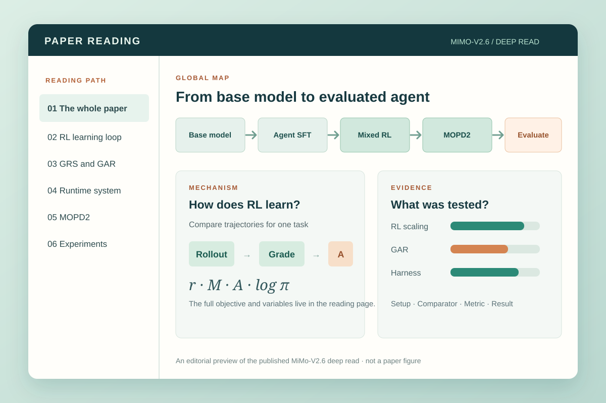

AN AGENT SKILL FOR BRIEF & DEEP PAPER READING
Read it. Trace it. Explain it
Choose Brief Reading for a focused explanation or Deep Reading for full technical reconstruction. Get one offline HTML connecting the problem, mechanisms, equations, figures, and evidence, with sources you can check.
Codex · Claude Code · Kimi Code MIT · Open source · No separate API key

- 27
- Published readings
- Brief / Deep
- Choose your reading depth
- HTML + Markdown
- Read offline, check the sources
Start with one paper
Already use Codex? Run these in your project (Node.js 20+):
npx --yes skills add xiaofengShi/paper-reading-skill --skill paper-reading --agent codex --copy --yes
(cd .agents/skills/paper-reading && npm ci && npm run doctor)
Start a new agent session and paste:
Use $paper-reading in Brief Reading mode to explain https://arxiv.org/abs/2106.09685v2 in English.
I know basic neural networks but am new to LoRA. Explain why it saves
trainable parameters, work through a small example, and distinguish
reported results from interpretation. Save the offline HTML and Markdown
in paper-readings/lora/. Check the full paper before writing.
Expect paper-readings/lora/reading.html and its Markdown audit source after the agent completes the reading. The agent reads and authors the explanation; the renderer turns that Markdown into HTML. The skill is free and needs no separate API key; your agent's normal model access and charges still apply. Other agents, installation options, and troubleshooting.
Choose Brief or Deep Reading
| Mode | What you get | How to request it | Example |
|---|---|---|---|
| Brief Reading (default) | A focused explanation of the problem, main path, key mechanisms and equations, decisive evidence, and limits | “Read this paper” or “Use Brief Reading” | ResNet · English |
| Deep Reading | Step-by-step technical reconstruction across substantive sections and relevant appendices, with key derivations, worked examples, and each major experiment and ablation | “Use Deep Reading” or “Read this paper deeply” | Rollback · 中文 |
Both deliver one offline HTML and its Markdown audit source, with a visible mode label. Deep grows with the paper's complexity and requires complete core coverage and reconstructable explanations; word count alone cannot qualify it. See the mode comparison and Deep Reading protocol.
To request the depth demonstrated by Rollback, paste:
Use $paper-reading in Deep Reading mode for https://arxiv.org/abs/2610.36068v1.
Write in English. Reconstruct the search, relative value labels, policy loss,
and world-model updates. Work through the equations and examples, interpret
each major experiment and ablation, and cover the relevant appendices.
Save the offline HTML and Markdown in paper-readings/rollback/.
Explore complete readings 27
The gallery includes Brief Reading and Deep Reading, with the mode and language shown on every entry. Start with ResNet or LoRA for Brief, or Rollback for Deep: its 16 connected chapters reconstruct the search, equations, training system, experiments, and appendices A–G. Each reading keeps figures and evidence beside the explanation and includes paper-specific understanding checks. The existing -deep-read URLs remain stable; the displayed mode identifies the depth.
Both depths default to a researcher with relevant field foundations who is new to this paper. Adjust prerequisite bridges to the stated background; full beginner scaffolding is for a requested or clearly indicated beginner audience. Use examples, illustrations and optional paper-lab experiments where they clarify the argument, without a fixed teaching sequence. Before delivery check essential explanation gaps and redundant background; tutorials receive a whole-document and recommended-route walkthrough. See reader calibration.
Readings stand on their own: definitions, worked examples, experiment settings and conclusions are explained in the document, without requiring the reader to reopen the paper. Sources are collected at the end; optional body citations stay within the page. Production records stay in audit files. When sharing is requested, verify the hosted URL and provide any necessary runnable downloads. See independent reading and sharing and the 2026-11-03 rules review.
Standalone tutorial
How delivered driving data becomes model learning is a Chinese introduction for data engineers, with nine original explanatory graphics, three interactive experiments and runnable code. It explains the subject independently and collects sources at the end. Download the offline lab bundle · Tutorial source · Content and sharing review.
The 11 readings covered by the reconstruction record, including LoRA and ResNet, were rebuilt against the updated skill on 2026-10-27. See the reconstruction and verification record for source versions, worked examples, corrected claims, and validation limits.
- A team of Gemini 4 Argon agents beats MinecraftOpen the reading →
About this reading
A quantitative-depth Deep Reading (9k+ chars, 16 chapters, 18 subsections, 10 display equations, 24 worked calcs) of Google DeepMind's four Gemini 4 Argon agents beating Minecraft end-to-end: program-generation interface (2,783 programs, 63K lines JS), emergent coordination (roles in 10 min, Ghast loss-to-rule in 2 min), stronghold triangulation at 43m accuracy (independently recomputed), despawn-timer rescue with 2.5-min margin, dragon state-machine reverse engineering, and $520 cost breakdown with 91% cache economics. arXiv:2610.22319v1. · ZCode
- AgentBaton: Efficient Model Collaboration in Agentic TasksOpen the reading →
About this reading
A quantitative-depth Deep Reading (9k+ chars, 16 chapters, 18 subsections, 19 worked calcs) of NVIDIA's AgentBaton: direction asymmetry in model handoffs (capable-to-efficient wins), three readiness signals, a 2B learned detector (338ms median), saving 65.9% API cost across 11 model pairs while extending the Pareto frontier. arXiv:2610.35959v1. · ZCode
- Towards Foundation Decision Models: DrexOpen the reading →
About this reading
A quantitative-depth Deep Reading (9k+ chars, 16 chapters, 19 subsections, 9 display equations, 14 worked calcs) of the Drex family of four open decision models: choice/noul/score interface, pointer vs readout heads, RLAF training (verified outcome + same-backbone judge under KL anchor, closed-form optimum), Decision Index 0.4.1 SOTA 67.52 with 183ms latency, calibration and flip-rate analyses, and deployment engineering. arXiv:2611.07854v1. · ZCode
- Claude｜Building agents：何时把子代理折进主循环Open the reading →
About this reading
A quantitative-depth Deep Reading (9k+ chars, 16 chapters, 14 subsections, 10 display formulas, 17 worked calcs) of Anthropic's official guidance on folding subagents into the main agent loop: five enterprise failure modes with interface-count squaring, three keep-conditions as a decision rule, telephone-game fidelity and nested-loop latency models reproducing the 2x claim, progressive-disclosure budget matching the 80% prompt cut, and the eval-first migration path with task-flip analysis. Source. · ZCode
- What Does Multi-Turn Reinforcement Learning Really Improve in LLM Agents?Open the reading →
About this reading
A quantitative-depth Deep Reading (9k+ chars, 16 chapters, 22 subsections, 10 display equations, 12 worked calcs) of what multi-turn agentic RL actually improves: Pass@K boundary expansion vs Pass@T budget dependence (reversal -11.3 at 25% budget), step-level quality slightly declining on matched states while error-state recovery reverses (65.7-67.3%), likelihood mechanism (NLL overlap, trajectory LLR 228 vs 26), and BudgetMix RL repair (+7.9/+5.2/+3.8/+1.1 across budget tiers) with step-quality erosion eliminated. arXiv:2611.06483v1. · ZCode
- Axion 1.0: Open Agent Foundation Models, SimplifiedOpen the reading →
About this reading
A quantitative-depth Deep Reading (9k+ chars, 16 chapters, 20 subsections, 10 display equations, 26 worked calcs) of the deliberately simple three-stage recipe (2xSFT + RL, no mid-training/DPO/OPD) for open agent foundation models: model-aware four-operator difficulty enhancement, deterministic filter-select-compute-verbalize task construction, prefix-chain partial rewards, TITO/R3 training-inference consistency, plus full recomputation of Tables 1-3 and R3 diagnostics. arXiv:2611.03233v2. · ZCode
- CUA-Master: Scaling Computer-use Agents through Open-World Recursive ImprovementsOpen the reading →
About this reading
A quantitative-depth Deep Reading (9k+ chars, 16 chapters, 17 subsections, 11 display equations, 14 worked calcs) of nested double-loop recursive improvement for computer-use agents: open-world video seeding with visual-semantic dual-path reconstruction, primitive-based K/N composable task synthesis, snapshot-rollback retry, plus full recomputation of Table 1 efficiency claims and domain-table denominator audits (two tables fail to reconstruct). arXiv:2611.03126v1. · ZCode
- CausalWAM: Learning the Causes of Actions in World Action ModelsOpen the reading →
About this reading
A quantitative-depth Deep Reading (9k+ chars, 16 chapters, 27 subsections, 23 display equations, 17 worked calcs) of causal action identification in world action models: over-coverage lower bound (Prop 1), support-sparsity identifiability (Thm 1-2 with full proof chains), sparse token routing on Cosmos 3 Nano, block-recovery synthetic audit, and 17-task macro recomputation (0.24 to 0.43). arXiv:2610.42096v1. · ZCode
- A-RSIOpen the reading →
About this reading
A quantitative-depth Deep Reading (9k+ chars, 12 chapters, 20 subsections, 11 display equations, 11 worked calcs) of adaptive task refresh for zero-data multimodal self-improvement: training-log pool saturation detection, shared-configuration programmatic tasks, five-arm matched-update comparison, reward stress tests, and output decomposition. arXiv:2610.38568v1. · ZCode
- HarnessProOpen the reading →
About this reading
A quantitative-depth Deep Reading (9k+ chars, 17 chapters) of Pareto-aware recursive harness self-improvement: fixed LLM-generated tests, DPP coreset, three-priority planning, tiered selection; appendices B-D fully integrated; beating RHO at 26.1% lower cost with denominator recomputation. arXiv:2610.26770v2. · ZCode
- LongZeroOpen the reading →
About this reading
A Deep Reading of zero-data long-context RL: the policy writes a compact question-evidence-answer specification before expanding it into long documents, filters to the unstable band, and trains with GRPO, beating external-corpus and 397B-teacher synthetic data on five benchmarks. arXiv:2610.30132v1. · ZCode
- RollbackOpen the reading →
About this reading
A 16-chapter Deep Reading of experience-backtracking search: reconstruct PUCT, relative value bins, flow matching, model adaptation, and asynchronous training, then examine real-robot experiments and appendices A–G. arXiv:2610.36068v1. · Codex
- The TrinityOpen the reading →
About this reading
A method reading of capability-driven recursive self-improvement for multimodal agents: task→capability→harness trees, selective inheritance, Real2Sim2Real with a screening band, and a router reaching ~96% of Oracle. arXiv:2610.36077v1. · ZCode
- Trustworthy RSI SurveyOpen the reading →
About this reading
A survey reading of trustworthy recursive self-improvement: the h/B/U definition, the S1–S4/RI stage lens, four trustworthiness themes under three analytical roles, and the evidence funnel from 26 RSI-labeled claims to 4 matched-budget comparisons. arXiv:2610.35193v1. · ZCode
- Dual ExamOpen the reading →
About this reading
Read the 0%-success coupled pilot, then follow the two controlled tracks: fixed environment responses for Agents (10 configurations, 1,088 items) and fixed action interventions for World Models (400 cases), with explicit aggregation rules and a candid limitations section. arXiv:2610.31066v1. · ZCode
- Deep Residual Learning / ResNetOpen the reading →
About this reading
Calculate the original block's forward and backward passes, separate training degradation from generalization, and trace an appendix detection improvement. Five understanding checks, including an altered-shortcut transfer task. arXiv:1512.03385v1.
- LoRAOpen the reading →
About this reading
Change an input and trace the low-rank correction through both branches and merged weights. Work from initialization gradients to a two-dimensional subspace example, then inspect the evidence. Four understanding checks, including a new-budget transfer task. arXiv:2106.09685v2.
- OmniDR-BenchOpen the reading →
About this reading
Follow the video-centered research task and seven-stage workflow, then read how ARC builds audited rubric trees and what 18 agent configurations fail on: presentation near 82 while content and citation stay under 48. arXiv:2610.31158v1. · ZCode
- OpenDS-WorldOpen the reading →
About this reading
Trace the benchmark pipeline from audiovisual anchors through open-web evidence expansion and question inversion to human calibration, then read the 12-model evaluation and the cost/termination/failure analyses. arXiv:2610.30181v1. · ZCode
- DeepSeek-V4.1-Flash 中文Open the reading →
About this reading
A Chinese reading of the KV-cache compression report: three deployment costs, the CED/CSA2/FP4/SWA-Bounded-Replay trade-offs, and the reasoning-effort knob with its evidence chain. Same source PDF as the English reading above. · Kimi Code
- VISTAOpen the reading →
About this reading
Follow the visual harness from lossless visual memory and model-directed inspection to a perfect ARC-AGI-3 score, then read the harness ablation ladder and cross-benchmark evidence. arXiv:2610.02200v1. · Kimi Code
- IAROpen the reading →
About this reading
Follow Inject → Align → Recover from document exposure to retrieval-free QA, and compare domain gains with general-ability recovery across eight settings. arXiv:2608.20281v1. · Kimi Code
- MechVQAOpen the reading →
About this reading
Trace how expert-verified mechanical drawings become a ten-task benchmark, then follow MechVL's SFT and RL training ladder and read its ablations. arXiv:2605.30794v2. · Kimi Code
- RAFTOpen the reading →
About this reading
See how data refinement and answer-conditioned on-policy distillation work together, then inspect the domain-versus-general-capability evidence. arXiv:2606.00147v1. · Kimi Code
- MiMo-V2.6Open the reading →
About this reading
Follow the training path through the RL objective, GRS/GAR grading, runtime system, MOPD2, and experiments.
- DeepSeek-V4.1-FlashOpen the reading →
About this reading
Separate prefill computation, runtime global KV, and persistent KV; inspect CED and CSA2 with original figures, then read agent benchmarks with their harness conditions.
- Attention Is All You NeedOpen the reading →
About this reading
Follow encoder and decoder tokens through attention, compute the key equation, then read translation tests, ablations, and parsing transfer. arXiv:1706.03762.
Agent
8RL
2Post-training
6World-Model
1Eval
4Architecture
4Survey
1Claude
1
No readings found. Change your search or reset the filters above.
What you get
- Whole-paper map The question, setting, proposed idea, contributions, and where evidence enters.
- Method or argument path Inputs, stages, branches, feedback, and outputs, with consequential arrows explained.
- Mechanism close-ups Definitions, equations, assumptions, and a worked example where it helps.
- Experiment atlas Each question linked to its setup, comparator, metric, observed result, and supported reading.
- Connected synthesis What the method and evidence show together, with limits attached to the affected claims.
- Understanding checks Paper-specific questions about a mechanism, small application, or evidence boundary, with answers you reveal when ready. These are learning aids, not a measured comprehension score.
The diagrams guide reading; prose, formulas, tables, and original figures carry the detail. Source locations stay available for verification but are hidden by default in the HTML. The output is one offline-readable file, with Markdown as its audit source.
The reading method
The workflow combines established reading and knowledge-mapping ideas with a paper-specific editorial design. Its three checks answer different questions:
- Can we reconstruct the paper before explaining it Keshav's three-pass approach moves from an overview to the paper's content and then to a detailed reconstruction. The skill uses the first pass to draft a provisional map, the second to follow methods and results, and the third to work through the decisive equations, assumptions, proofs, or experiments. Brief selects the key explanations after checking the source; Deep completes the reconstruction across all substantive parts and relevant appendices.
- Does each diagram express a meaningful relationship Novak and Cañas's concept-map method starts with a focus question and connects concepts with labeled relationships and cross-links. Here, a map answers a paper-specific question such as “How does the mechanism change the result?” Arrows say whether they mean data flow, process order, or evidence; the accompanying text explains what they connect.
- Can a reader check the explanation against the paper SciDoc2Diagrammer-MAF reports that generated scientific diagrams can be incomplete or unfaithful to their source. This project takes that as a fidelity check: significant figures, formulas, numbers, and arrows must be checked against the source, and each experiment is read with its setup, comparator, metric, and result. It does not implement that paper's diagram-generation algorithm.
These ideas guide five explanatory layers: global map, main path, mechanism, experiment atlas, and synthesis. The understanding checks supplement the explanation when useful. The test of a useful deep read is whether someone can explain the paper's central mechanism and say which evidence supports each important claim, without hunting through the PDF for missing essentials. This is the project's method design, not a claim that the published examples have been validated in a reader study.
The public reading-quality checks share source, fidelity, evidence, and delivery gates across both modes. Brief requires an explanation score of at least 2 in each applicable dimension; Deep requires 3 in every applicable dimension plus a source-to-explanation coverage record. The reader tasks and answer keys make every published example testable by someone who did not write them. A renderer test or an author reviewing their own page is not an independent comprehension study.
Get started
The quickstart above installs a project-local Codex copy using the skills CLI. The bundled renderer needs Node.js 20 or newer. Your agent also needs access to the complete paper and tools to read it.
Personal installation and other agents
Choose an unused personal skill directory:
| Agent | Personal directory | Explicit invocation |
|---|---|---|
| Codex | ~/.agents/skills/paper-reading |
$paper-reading |
| Kimi Code | ~/.agents/skills/paper-reading |
/skill:paper-reading |
| Claude Code | ~/.claude/skills/paper-reading |
/paper-reading |
For Codex or Kimi Code, clone the repository as follows. For Claude Code, change the first line to paper_reading_dir="$HOME/.claude/skills/paper-reading".
paper_reading_dir="$HOME/.agents/skills/paper-reading"
mkdir -p "$(dirname "$paper_reading_dir")"
git clone https://github.com/xiaofengShi/paper-reading-skill.git "$paper_reading_dir"
(cd "$paper_reading_dir" && npm ci && npm run doctor)
doctor renders a small, explicitly synthetic fixture in a temporary directory and checks language, navigation, embedded math fonts, an SVG, and a chart. It does not download or read a paper, and passing it does not verify scientific content.
Start a new agent session, attach a PDF or give an accessible paper URL, and ask: “Use Brief Reading in English to explain this paper.” For the expanded mode, ask: “Use Deep Reading in English. Reconstruct the mechanisms, derive the key equations, interpret the major experiments and ablations, and cover relevant appendices.” Replace “in English” with your preferred language. With no language cue, the skill defaults to English; a request in Chinese produces Chinese output. The native renderer provides English and Chinese navigation.
For an existing Git clone, review local changes, run git -C "$paper_reading_dir" pull --ff-only, then rerun npm ci and npm run doctor there. CLI-installed copies and lightweight packages may have no Git history: preserve local changes before replacing them with a fresh installation.
Start a reading directory
An optional initializer creates a place to work. From a project with the quickstart installation:
node .agents/skills/paper-reading/scripts/init-reading.cjs \
--out paper-readings/my-paper --title "My paper" \
--paper "https://arxiv.org/abs/2106.09685v2" --lang en --mode brief
This creates reading.md, brief.md, and an assets/ directory. Use --mode deep to prepare a Deep Reading task. brief.md is the task brief in either mode. The Markdown is visibly marked unfinished. The command does not fetch the paper, author an explanation, or generate HTML; the agent must complete and check the draft before rendering. An existing destination is refused. Use --lang zh-CN for a Chinese draft, or run npm run init:reading -- --help inside the installed skill for all options.
Build a lightweight local package
Build the current two-mode runtime from a repository checkout to install without the public gallery and website. The v0.2.0 release archive predates the Brief/Deep distinction. For the current package:
npm ci
npm run pack:skill
The result is dist/paper-reading/, including a SHA-256 manifest.json, and dist/paper-reading.tar.gz when the system tar command is available. Copy the whole runtime directory to an unused skill location from the table, then run npm ci and npm run doctor inside that copy. It includes the renderer, helpers, references, and synthetic check fixture; it excludes docs/, examples/, dependencies, and tests. Existing package outputs are refused; use npm run pack:skill -- --out <new-output-parent> for another build.
Troubleshooting
| Symptom | What to check |
|---|---|
Missing marked or katex |
Run npm ci inside the installed skill, with its package-lock.json present. |
| Missing helper or fixture files | Install the full checkout or generated runtime directory; copying SKILL.md alone is insufficient. |
ERR_REQUIRE_ESM with an older installation |
Update the skill and reinstall its dependencies. The current renderer supports Node.js 20.18 and newer. |
| Agent cannot find the skill | Confirm its installation directory and start a new session; use the explicit invocation above. |
| Initializer says the destination exists | Choose a new reading directory; the initializer preserves existing files. |
| Agent only has an abstract or inaccessible PDF | Provide the full source or keep the result explicitly incomplete. A summary cannot stand in for a complete deep read. |
The agent performs the scientific reading and authors the Markdown; the renderer converts that Markdown to HTML. An ordinary request selects Brief; an explicit deep-reading request selects Deep. Quick scans use Brief with the requested shorter scope. Review and research comparisons add lenses to the selected mode.
How it works
The skill instructions guide an agent through orientation, full reconstruction, explanation, and source checking. Paper-type routes select suitable views for empirical, systems, benchmark, dataset, theory, and survey papers; visual-reading rules keep diagrams tied to explanations and evidence. Reading modes define Brief and Deep; Deep Reading adds coverage, reconstruction, derivation, and experiment-by-experiment requirements. Review and research are optional lenses.
The bundled renderer turns a Markdown audit source and local visuals into a standalone HTML file with embedded images, diagrams, KaTeX math, and fonts. Every source begins with an explicit language marker, <!-- paper-reading-lang: en --> or <!-- paper-reading-lang: zh-CN -->, which sets navigation and chart labels. An optional second line chooses one of four built-in visual themes: <!-- paper-reading-theme: forest -->, cobalt, plum, or saffron; the default is forest. Declare <!-- paper-reading-mode: brief --> or <!-- paper-reading-mode: deep --> in the same header. The HTML title and hero show that mode; older sources without a mode render as Brief. The author selects a theme for each paper rather than having the renderer guess from its text.
For each paper, the skill judges whether exploring a branch, state change, or feedback loop adds understanding; otherwise it uses a static view. An interactive view can use Archify or self-contained HTML/SVG, with the key explanation still visible without scripts. Neither Archify nor another locally installed skill is required. The renderer input format documents the Markdown contract, figure extraction covers original figures, and understanding checks describe focused questions with native answer disclosures.
Every published reading ships its Markdown audit source and visual inputs under examples/, indexed in readings.json; they are build materials, not separate reading pages.
To rebuild all published examples locally:
npm ci
npm run doctor
npm run build:examples
npm run check:examples
npm test
Validation and scope
Different checks support different claims:
| Check | What it can establish | Boundary |
|---|---|---|
| Automated structure and rendering checks | Input contracts, language and theme declarations, math, declared embedded assets, chart behavior, and generated-file freshness. | A passing renderer cannot establish scientific correctness or reader understanding. The doctor uses synthetic material. |
| AI-assisted source checks | Trace an explanation's equations, figures, numbers, and claims to an identified paper version; record discrepancies and missing coverage. | Report what was checked and what remains uncertain. These checks are not experimental reproduction or independent human review. |
| Independent reader evaluation | The reader tasks provide questions and answer keys for a future evaluation. | No independent reader study has been reported. Answer disclosures and AI answers are not evidence of measured human learning. |
The gallery covers architecture, parameter-efficient adaptation, technical reports, domain fine-tuning, engineering benchmarks, document knowledge internalization, and agent harnesses. Theory and surveys remain outside the current example set. LoRA's small matrix and parameter-count exercises are labeled teaching examples, separate from the paper's reported experiments. The project has not established that its format improves comprehension over other reading methods.
Archify is an optional presentation tool for interactive structure diagrams. Scientific fidelity still depends on reading and checking the source paper.
Questions, bug reports, and examples from other paper types are welcome in GitHub Issues. The project is MIT licensed.
Maintainer notes
This README is the English source for the default project website; README.zh-CN.md is the source for the Chinese page. Run npm ci and npm run build:docs after editing either language, and commit generated HTML and CSS together with their sources. The site generator is scripts/build-docs.cjs; the homepage uses BoardUI components rendered at build time, with layout in styles/site.css. See website maintenance for the source and runtime boundaries.